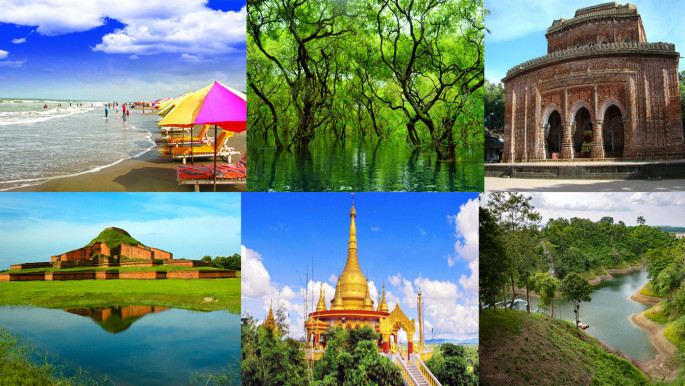
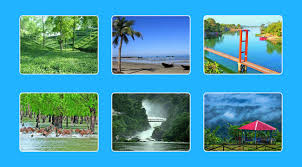

Bangladesh is a beautiful country blessed with rivers, hills, forests and sea beaches. Every year thousands of local and foreign tourists visit different destinations across the country.
From the world's longest sea beach at Cox's Bazar to the mangrove forest of Sundarbans, Bangladesh offers unique experiences for nature lovers and adventure seekers.


Learn more from: Bangladesh National Tourism Portal